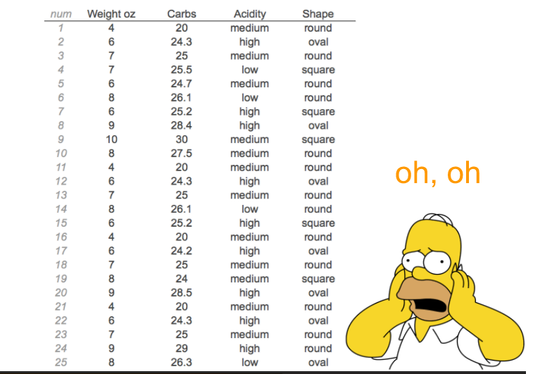
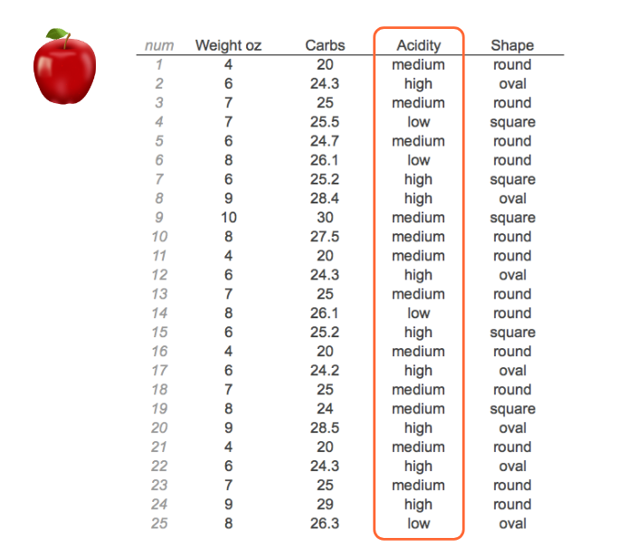
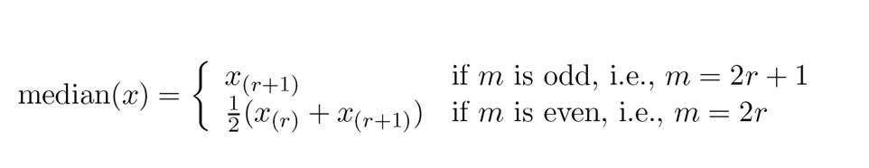
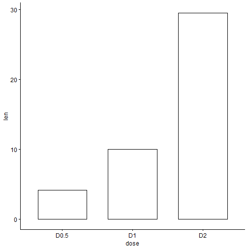

La estadística es el estudio de la colección, análisis, interpretación, presentación y organizacón de los datos.
Estadística descriptiva
Diseño de Experimentos
Carlos Neftaly Lozano A.
Microbiólogo Industrial y Ambiental, Msc
Definición
Estadística

Fuente de datos en Microbiología..

Datos
En estadística, 'los datos' se conceptualizan como un conjunto de objetos sobre los cuales medimos u observamos una o más características .

Variable
Una característica o atributo que puede variar de un individuo a otro.
Variable
- Inviduo
- Observación
- sujeto
- objeto
- caso
- Unidad experimental
- Variables
- Característica
- Atributo
- Rasgo
Variables
Las variables juegan un papel protagónico en la estadística y diseño de experimentos
Variables

Variables

Variables
Nuestro turno: ejemplo de variables típicas en microbiología.....
Variables
¿Cómo convertiríamos una variable cuantitativa en una cualitativa o viceversa?
Caso 1: Unas cuantas manzanas....

Caso 1: Unas cuantas manzanas....
Caso 2: Más manzanas....
Caso 2: Más manzanas....

Caso 3: Muchas más manzanas....

Caso 3: Muchas más manzanas....

Resumiendo variables...
Tablas de frecuencia
Gráficos
Resumenes numéricos
Resumiendo variables: Tablas de frecuencia

Resumiendo variables: Tablas de frecuencia
| Acidity | Conteo |
|---|---|
| Low | |
| Medium | |
| High |
Resumiendo variables

Medidas de tendencia central
Media: Promedio
Mediana: Punto medio o central
Moda: Más común o frecuente
Media
\[\bar x = \frac{1}{n}\sum_{i = 1}^{n} x_i\]

Mediana
Es el punto medio o central de una distribución ordenada de valores.


Variables categóricas: Representación gráfica
Gráfico de tortas

Variables categóricas: Representación gráfica
Gráfico de barras
